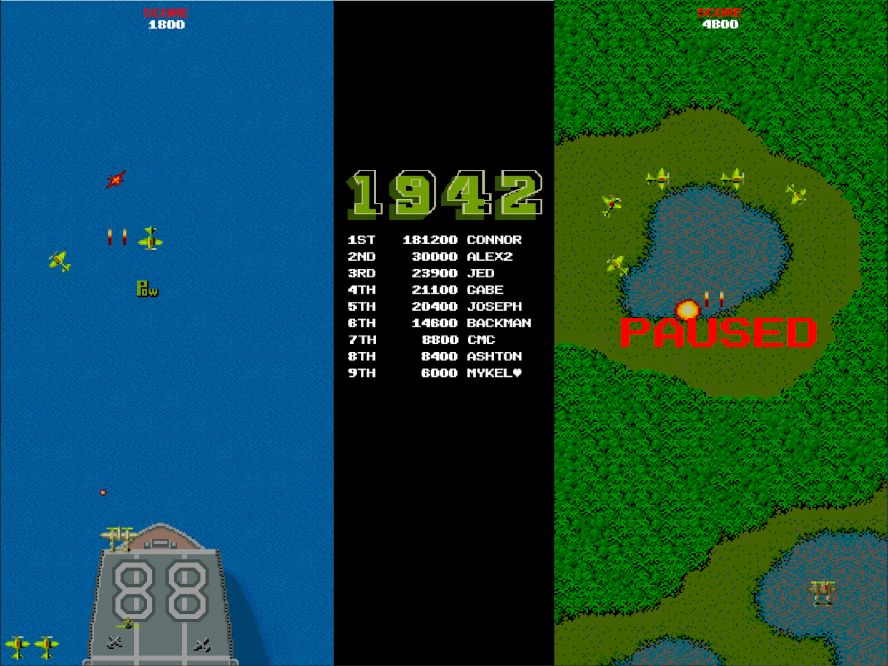

About Me
Hello! I’m Jimothy, a passionate Computer Science sophomore at Buena Vista University with a deep curiosity for technology and innovation. As I continue my studies, I’ve developed a solid foundation in programming, algorithms, and software engineering principles. My academic journey so far has equipped me with the skills to tackle complex problems and build efficient, scalable solutions.
Beyond the classroom, I’ve immersed myself in various projects and internships that have honed my practical experience. From developing web applications to contributing to open-source projects, I thrive on challenges that push the boundaries of my knowledge. My recent project involved creating a machine learning model to predict market trends, which sparked my interest in data science and AI.
In addition to my technical skills, I’m a collaborative team player who values clear communication and creative problem-solving. When I’m not coding, you can find me exploring the latest tech trends, attending hackathons, or indulging in a good sci‑fi novel. I’m excited about the future and eager to contribute to impactful projects that drive technological advancement.
Experience
-
IT Helpdesk Associate
RXI, Inc. • Part-TimeJUN 2023 — PresentAs an IT Helpdesk Associate, I provide essential technical support to ensure smooth daily operations. I troubleshoot and resolve hardware, software, and network issues, assist with equipment setup and configuration, and manage support requests through a ticketing system. This role sharpens my problem-solving skills and enhances my ability to communicate technical information effectively while keeping up with emerging technologies.
-
Sales Associate
Harmony Health • Part-TimeJUN 2023 — AUG 2023Summer job in between school semesters. Sold items as a retail operative and sold, operated, and cleaned rooms for various therapeutic services, including saunas, float tanks, and steam showers.Summer job in between school semesters. Sold items as a retail operative and sold, operated, and cleaned rooms for various therapeutic services, including saunas, float tanks, and steam showers.
-
Laser Technician
XTA High School • InternshipAUG 2020 — JAN 2023Utilizing a laser engraver to apply designs to various merchandise items to be sold later. I also assisted in the selling and advertising of these products.Utilizing a laser engraver to apply designs to various merchandise items to be sold later. I also assisted in the selling and advertising of these products.
Projects
-

1942 Clone
For our Computer Science I final project, we were tasked with creating (or recreating) a game using pygame. I chose to recreate the classic arcade game 1942. The recreation includes basic movement, shooting, mutliple enemies, bosses, powerups, levels, scoring, and a leaderboard.
-
PageWise
PageWise is a basic personal library management system. It allows users to browse the books they own, locate those books in the real world, and manage any changes to their library. Built as a mobile-first single-page web application, PageWise is designed to be simple and easy to use.